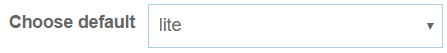
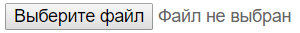
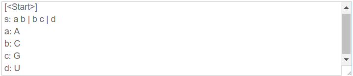
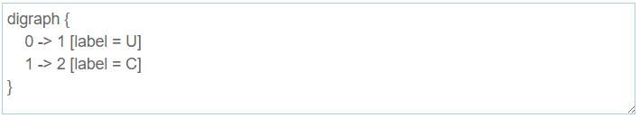
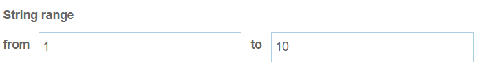
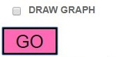
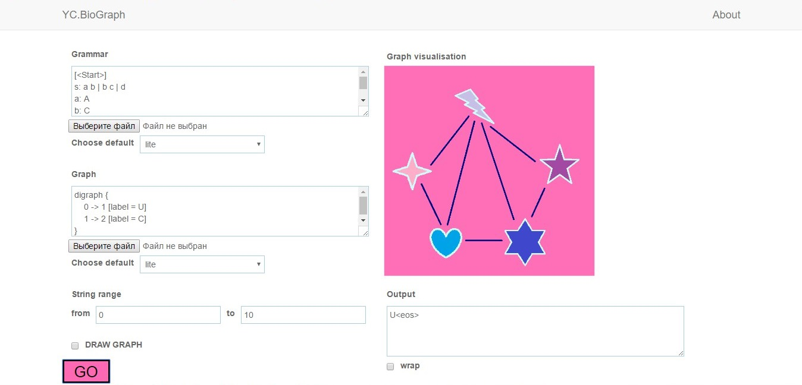
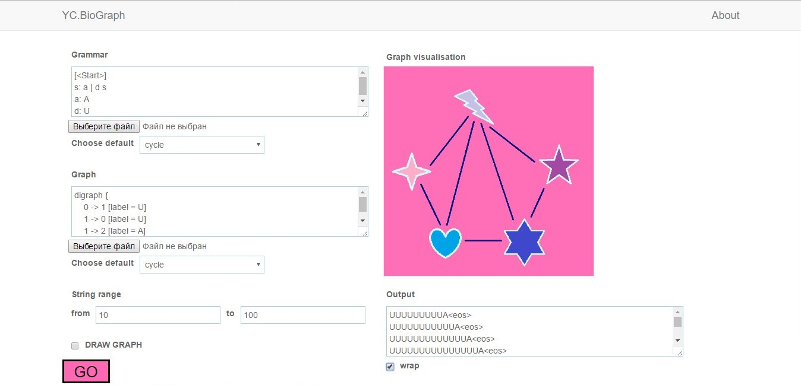
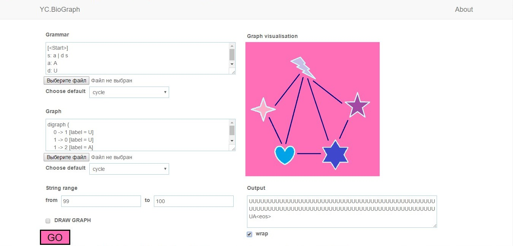

BioGraph
Documentation
YC.BioGraph is a special web application for searching subpaths in the metagenomic sequences. This app also visualizes the obtained sequences on input graph.
Tutorial
Getting started
To start working with YC.BioGraph web application you need to fill in grammar, graph and range input forms.
You can use one of default grammars/graphs
choose file from your device
or write them in the input textbox as you can see here.
 Remember that the range input should be correct. Also if you want to get all length sequences, input (-1, -1) range.
If you want to visualize graph, use checkbox. After filling in all the forms press button "GO" to see the result.
Some more examples
- Example 1 
- Example 2 
- Example 3 